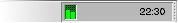
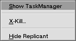

| Be TaskManager Documentation |
The deskbar replicant of Be TaskManager displays the current CPU usage in the deskbar. One bar is displayed for every CPU in the system.
To display the deskbar replicant select "Show in Deskbar" from the "View" menu in the main window.
By right clicking on the deskbar replicant you can bring up the following menu:
